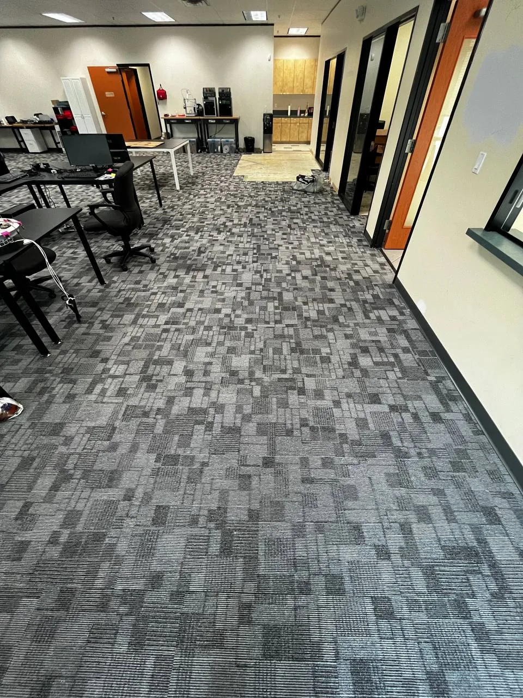
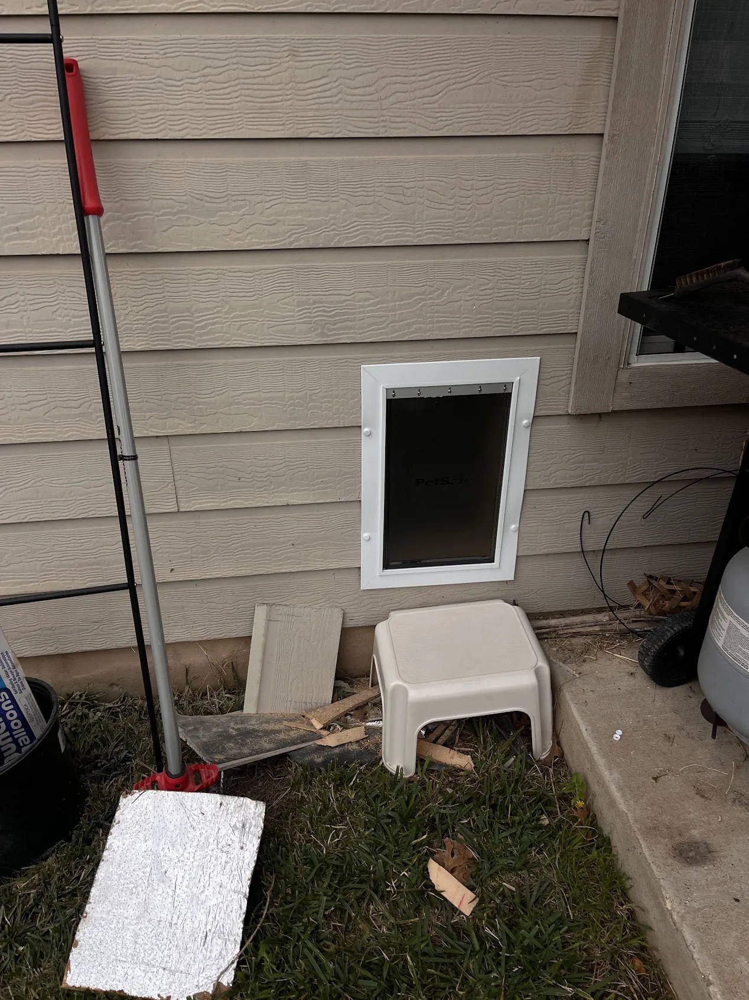
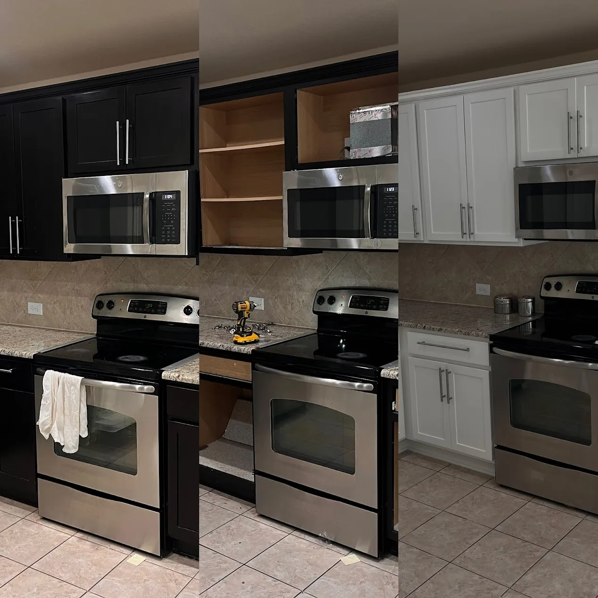
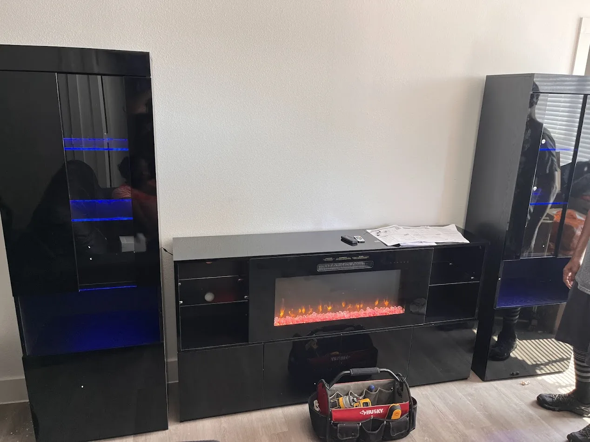
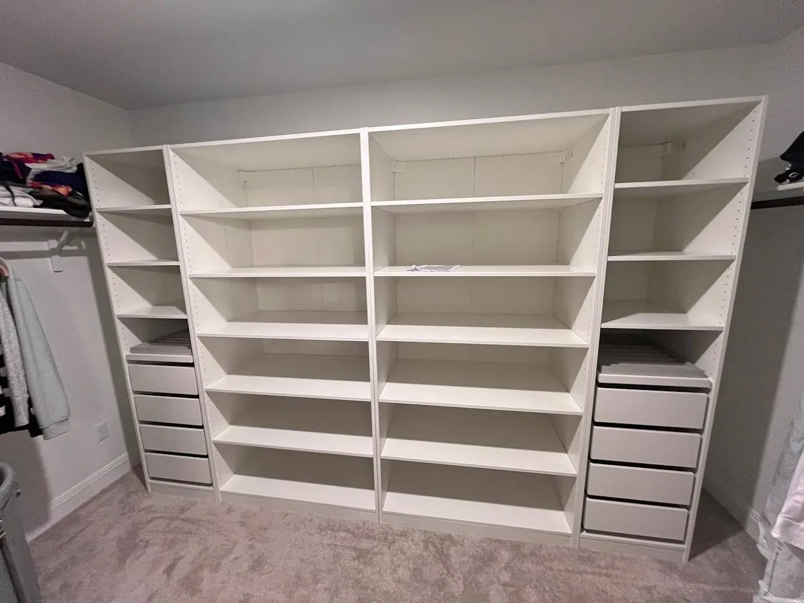

Handyman Services in Cedar Park, TX

TV Mounting
Full TV mounting with wire concealment — above fireplace, on drywall, or on brick/stone. Clean finish, no exposed cables.

Door Repair & Installation
Interior and exterior doors — hinges, locks, weather stripping, alignment. New door installation or fixing doors that stick, don't latch, or won't close properly.

Appliance Installation
Dishwashers, microwaves, ovens, washers, dryers, refrigerators. Proper hookup, leveling, and testing. You supply the appliance, Gene installs it.

Flooring & Carpet
LVP, laminate, hardwood, tile, and carpet installation. Room-by-room or whole-home. Subfloor prep included when needed.

Pet Door Installation
In-door, in-wall, or in-glass pet door installation. Interior doors, exterior doors, or garage doors. All sizes for any breed.

Bathroom Fixtures
Vanity mirrors, lighting, towel bars, toilet replacement, faucets, and accessories. Full bathroom refresh without a contractor.

Kitchen Updates
Cabinet hardware, shelving, under-cabinet lighting, minor repairs. Affordable kitchen refresh without a full renovation.

Furniture Assembly
IKEA, Wayfair, Amazon — any flat-pack furniture assembled quickly and correctly. Beds, desks, shelving, wardrobes, office chairs.

Closet & Storage Systems
Custom closet organizers, shelving systems, garage storage. ClosetMaid, IKEA PAX, or custom built-in solutions.
How It Works
Call, schedule, done — most jobs wrapped up in a single visit.
Call or Text
Describe what needs doing. Gene responds same day, Mon–Fri, 8 AM – 4 PM (after hours & weekends, text (754) 971-2393).
Get Scheduled
Most jobs scheduled same week. For larger projects Gene may visit first to assess.
Job Gets Done
Gene arrives on time, brings his own tools, and gets it done right the first time.
Pay After
Payment after the job is complete. Cash, Zelle, Venmo, or card. No deposits for hourly work.
Handyman FAQ
Need a Handyman in Pflugerville?
Call or text Gene — same-week availability, Mon–Fri, 8 AM to 4 PM.